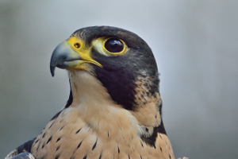

Peregrine Falcon
The peregrine falcon is the fastest member of the animal kingdom
- Body Length: 34 - 58 cm
- Wingspan: 74 - 120 cm
- Highest Measured Speed: 389 km/h
- Conservation Status: Least Concern (Healthy population numbers)
By using high speed hunting dives to capture its prey, the peregrine falcon reaches speeds higher than any other animal on Earth, often in excess of 320 km/h. This blistering speed, coupled with the bird's habit of nesting in high-elevation urban environments (particularly skyscrapers and bridges), have made it a popular animal in modern culture. Due to pesticide usage in the 1960s, peregrine numbers declined worldwide, to the point of local extinction in some areas. With successful breeding programs and protection, however, the peregrine falcon is back at a conservation status of "Least Concern".